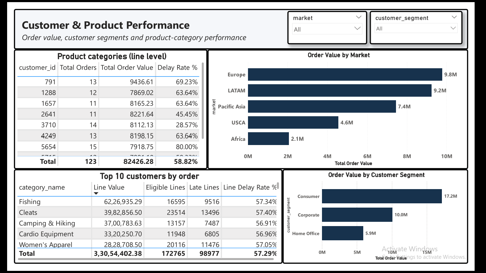
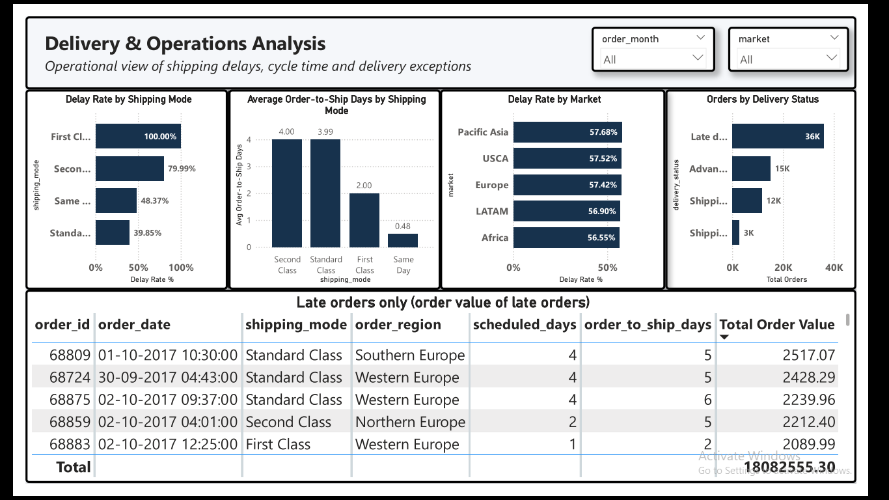
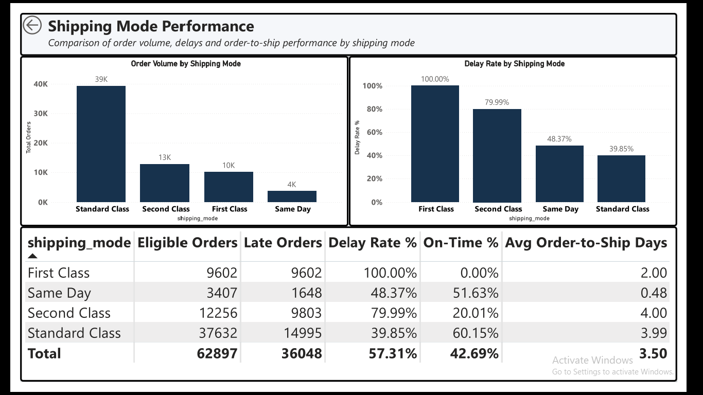
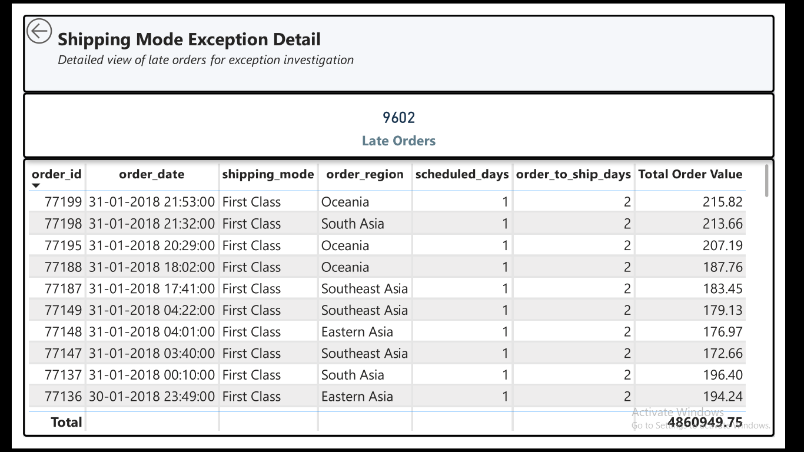
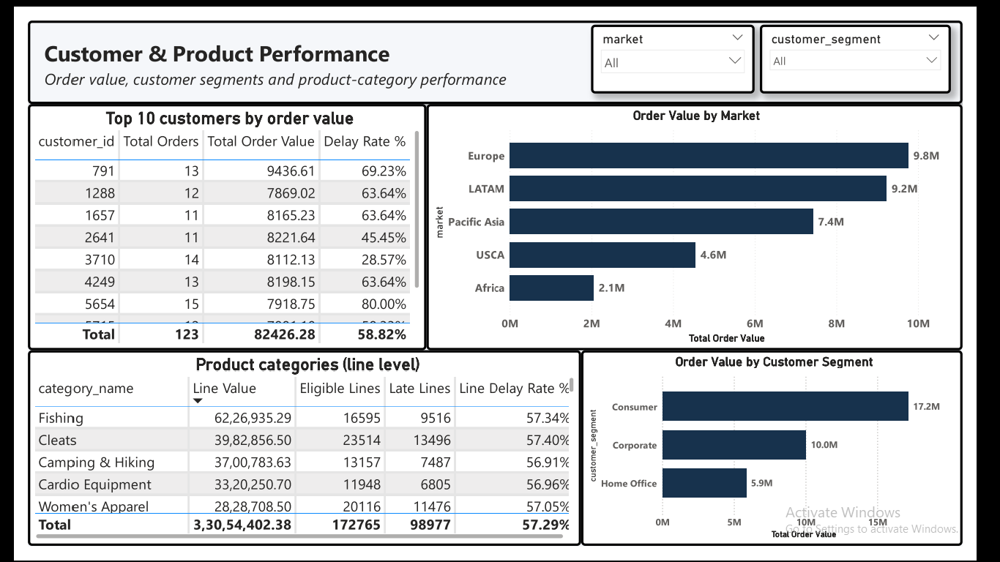

AI-Powered Supply Chain Analytics
Order data to validated KPIs, a Power BI dashboard, an n8n report workflow and a checked AI summary step.
65,752Total Orders
62,897Eligible Orders
42.69%On-Time %
57.31%Delay Rate %
3.50Avg Order-to-Ship Days
33,054,402.38Total Order Value
Jan 2015 to Jan 2018. 2,855 canceled orders are excluded from eligible orders. The delay pattern by shipping mode is unusually uniform and may reflect how the dataset was built. These are dataset findings, not proven operational causes.
Dashboard
Download the full dashboard as PDF
Values on the unfiltered pages were compared with SQL and match.





What was built
- Python profiling and cleaning, PostgreSQL raw, staging and analytics layers
- SQL KPI views reconciled to the Power BI dashboard (5 pages)
- n8n workflow that validates inputs, logs every run and fails visibly on bad data
- AI insight layer with a code checker that rejects invented numbers and causes
AI status: the summary step is a fixed template, not an AI model. No AI call was run. Only the checker was tested.